A wide road and a well-worn white Jeep straight out of Jumanji delivered me from the airport to a three-story compound in Monrovia housing two organizations: Liberia Pure, a small business specializing in honey and coconut oil, and Universal Outreach Foundation, a nonprofit focused on education and economic development in Liberia. Abu drove. A sturdy, soft-spoken Liberian, he patiently survived my initial onslaught of questions about the city, the roads, the population size, the construction everywhere. I was a bit chagrined when Emma, my partner, hopped in ten minutes later to ask Abu about himself — his three-year-old daughter, his home, their previous adventures together.
That Jeep ride arrived after four days of travel: five flights, two trains, one broken plane computer, a conversation beneath the Eiffel Tower, a train to Amsterdam, a bomb scare in Brussels, an omelet in Ethiopia, and my first shower in an airport lounge. I've since learned this is a perfectly normal Liberia itinerary. Airline routes from North America and Europe run sparse and lightly serviced. The country is not easy to get to, which is part of the point.
The trip had been in the works for months, planned mostly by Emma, who estimates she's spent nearly a year total in the country, working alongside Kent Bubbs Jr. and Landis Wyatt — the two people running UOF. In return for a free flight and accommodations, we had promised to do a social media and communications overhaul for UOF in a week.
I am not, historically, a nonprofit guy. I've never donated much. Rarely volunteered. Always been skeptical of entities that exist without the goal of revenue. It was Emma's enthusiasm for the work, and really her enthusiasm for how genuinely good Landis and Kent are as people, that pushed me onto the plane. What followed changed my mind in ways I did not expect.
Here's what I learned.
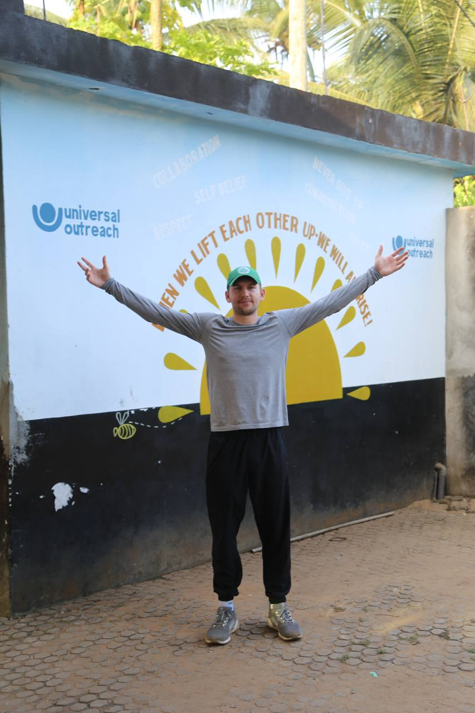
"When we lift each other up, we will all rise." Outside the UOF compound, Monrovia.
Creating Flywheels for Liberia: Coconut Oil, Beekeeping, and Small Loans
One of Kent's most memorable spiels — and he had many, as we spent hours with him talking about UOF's goals and brand — was essentially this: all corporate entities are the same in that "money comes in, money moves around, money goes out." It is the entities that leverage this movement best to get to their end goal that stick around. On the business side, this efficiency drives revenue. On the nonprofit side, it drives social impact. In essence, principles of good business can lead to goals outside of revenue.
Kent and Landis, two Canadians you might expect to be somewhat liberal in their operating temperament, run UOF on pure business principles. Universal Outreach, though a non-profit, seems to be more of an accelerator than anything else — because through what Kent and Landis call "programs," UOF has seeded ventures across industries including coconut oil, coffee, beekeeping, and small business loans. All donations for UOF function as seed money for Liberian industry and make up the foundation that network effects can be built upon. Their goal is flywheels, with initial donations being the kickstarter for a new innovation.
The UOF Flywheel
How a single donation compounds into a self-sustaining industry
The coconut tree example is the clearest. Kent raises money to plant coconut trees — a classic donation program any donor would happily fund. But years before asking a donor for money, he and Landis had been sourcing the buyers and market for the products throughout Liberia and beyond, looking at coconut oil as a viable local product, and working with Liberia Pure — the for-profit business sharing their compound, owned and operated by two Liberians, Gladys and Cecil Wilson — to ensure that once those trees were planted, the market would already exist to absorb and distribute the output. This results in donations leading to industry that can sustain on a secondary market -- with roughly $150,000 in coconut oil value generated in just the first few years, with over 3,000 trees in the ground and the Sass Town processing facility producing approximately 5,360 litres of cold-pressed oil. This is the beauty of self-perpetuating programs. And, it also protects against downside, where, if Kent can't raise a dollar next year, Liberia already has thousands of coconut trees that will bear fruit and generate positive social impact for years to come, so there is very little downside.
Beekeeping is the most astounding example. Liberia had zero commercial beekeepers in 2011. Today, it has close to 5,000. Initial donations to UOF funded the start of a beekeeping industry, paying for training and initial equipment giveaways. From there, in a program Wilson and UOF designed, an elegant solution for growth has taken root to expand the reach of the initial program. First, beekeepers teach community members to grow hives on unused property, paying landowners a 10-15% fee share based on honey sold. Then, community members use that cash for household goods, or save up to purchase equipment and join the industry themselves. UOF's ongoing role supports equipment grants, extension workers to implement new trainings, and presence at the annual conference. Liberia Pure acts as the natural buyer for local honey, packaging it to be resold in stores. Everything now runs on its own momentum. This is two-sided philanthropy that, once started, creates a market of buyers and sellers for raw goods that keeps spinning long after the original donation is spent.
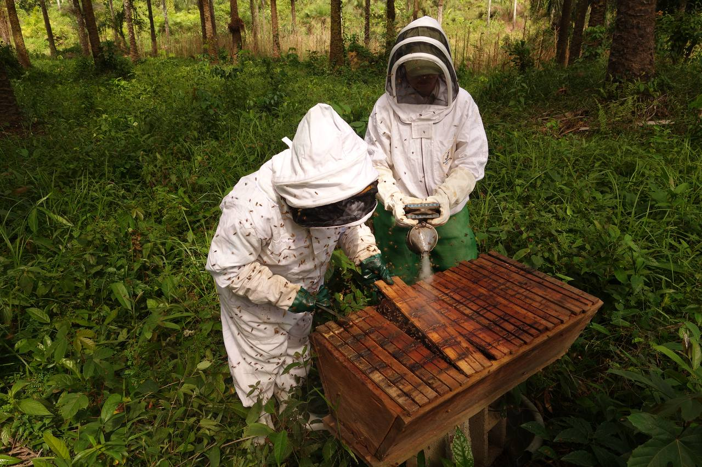
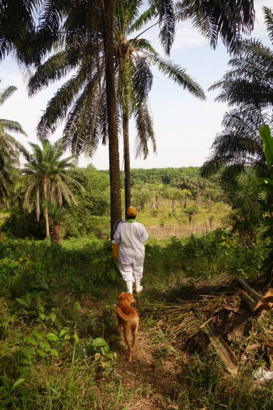
Left: Landis and Etta working one of the 26 hives on Etta's property, about 45 minutes outside Monrovia. Right: Etta's farm — palm trees, cucumbers, cocoa beans, and bees.
I was lucky enough to go beekeeping while in Monrovia — an early morning, sweating under the sun with Etta, a woman with 26 hives on her property about 45 minutes from the city. One bee sting later and one experience I will never forget (the sound of hundreds of bees prancing and dancing just centimeters away from your face through a thinly-laid veil of mesh is quite the wake-up call), I can say Etta has quite an interesting side hustle She produces 10-20 tins a year of honey, each holding five gallons, sold on the open market to buyers like Liberia Pure for roughly $18 a gallon. In a country where the average income is under $1,500 a year, Etta's beekeeping brings in up to $2,100 in good production years.
Etta's Numbers
Beekeeping income vs. Liberia's average annual income
annual income
(good year)
Etta also grows cucumbers and cocoa beans on the same land. The beekeeping is a side hustle.
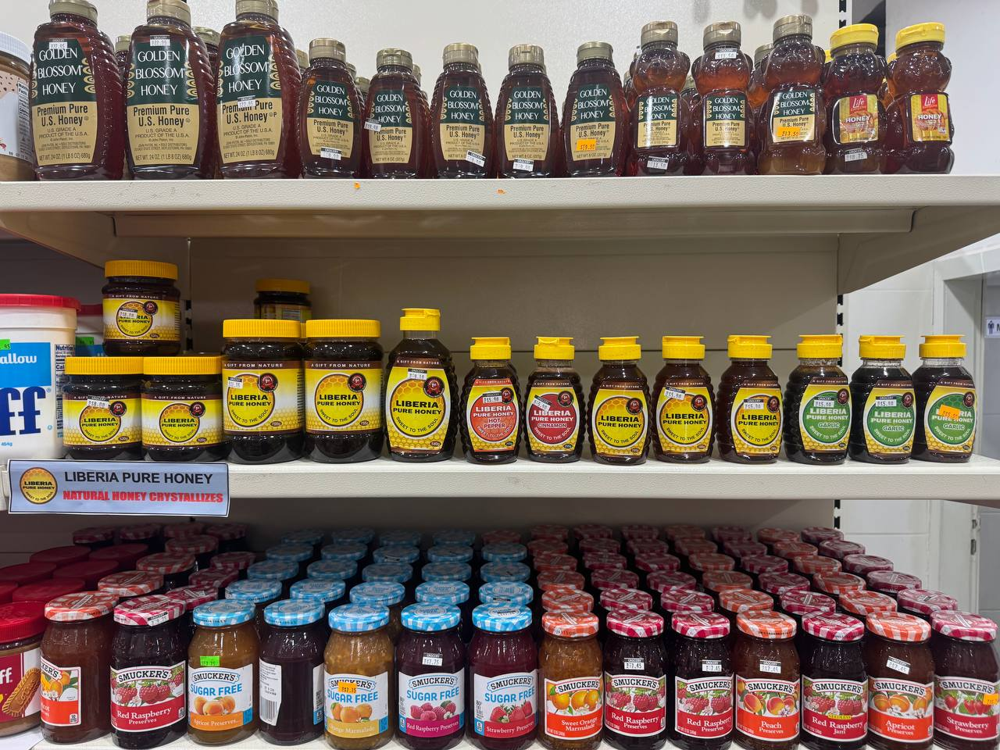
Liberia Pure honey on the shelves of a Monrovia grocery store — sitting directly above a row of imported U.S. honey.
The more I spent time in Monrovia, the more I kept seeing flywheels everywhere. For instance, on the drive back from beekeeping, Abu pulled over at his second tea shop — cement on the sides, tin on the roof, roughly 30x50 feet, busy at 11am, run by his mother (who cannot read but can certainly handle the money) alongside two young boys from the neighborhood. He had funded it through a UOF small business loan, and was using a second loan to build a three-unit rental property nearby. A drive at UOF, two tea shops, and an up and coming rental shop -- it seems I had not been a very good question asker during my initial rid from the airport. (Another Abu sidenote: earlier that morning, he had noticed women selling mango drink packs for 850 Liberian dollars and knew the going rate was 1,000. He bought every pack on the road. Arbitrage at every opportunity.)
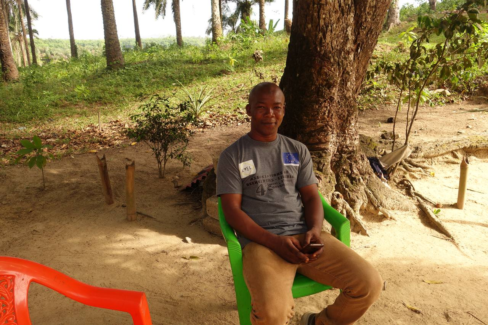
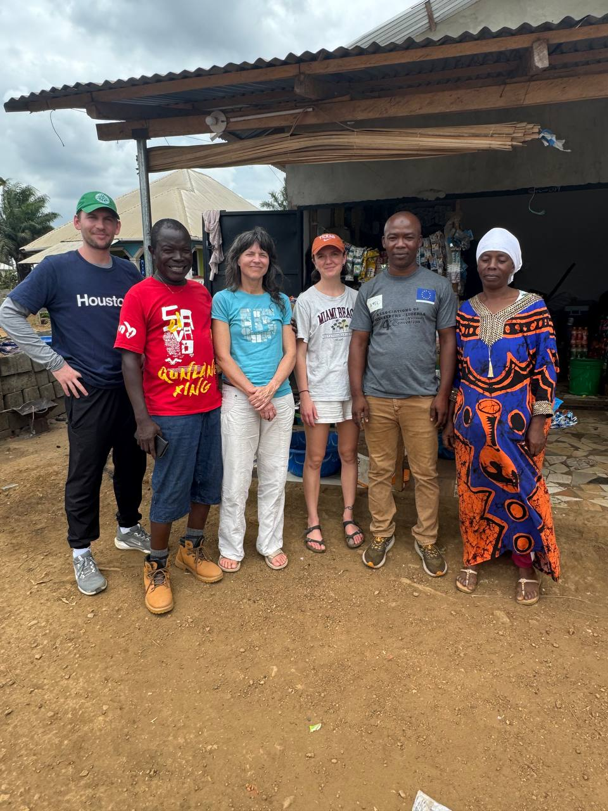
Left: Abu at the farm after the morning's work. Right: At Abu's tea shop on the way back — the author (left), Richard (red shirt), Landis, Emma, Abu, and Abu's mother.
The small loans program is itself a two-sided flywheel. First, UOF runs an educational course (designed and operated thorugh donations) for small business owners covering best practices, accounting, and general management. Second, graduates can access $500-$3,000 loans at monthly rates undercutting local banks — which price loans at 20% or higher and require KYC documentation that many entrepreneurs simply can't clear in Liberia. This is another example of UOF implementing programs, ventures, that are two sided in nature: training and in practice -- with many success stories already bearing fruit.
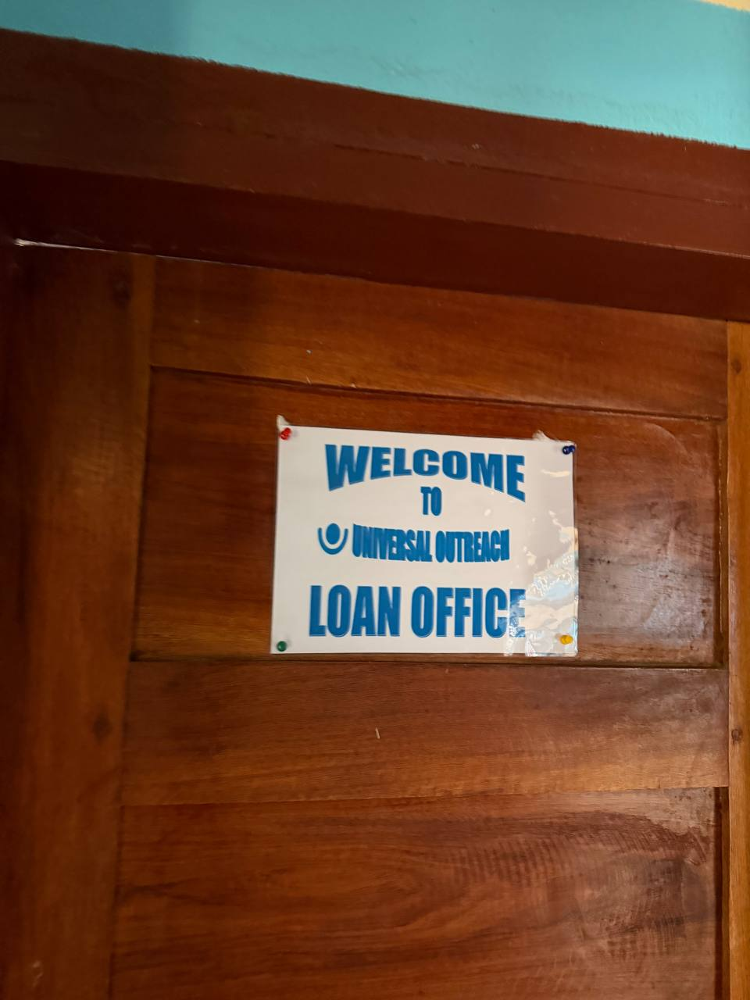
The loan office door inside the UOF compound. $450,000 lent across approximately 200 businesses. 99% repayment rate.
For instance, one story that stuck in my mind is that of Mercy Benson who, through a small loan, moved her clothing store from a market stall to a standalone unit, wherein monthly income went from $500 to $800 USD (60% increase). Another story is Eric Vaye, who went through the business development program and learned the power of receipt issuance compared to mutual trust and memory. He has since increased his recorded profits and opened a second stall. The small loans program, when tied to practical business education, have proven to be simple, yet effective kickstarters for local businesses.
This type of program-building pattern has been repeated many times across UOF's 20-year history.
Start with an idea. Build a program around it. Source a market. Find donors. Implement education. Support industry. This is the UOF flywheel that has worked across industries.
25 Years of Flywheels
Every program builds on the infrastructure of the last
2001
Wells & Schools — Clean water for 20,000+ people. School construction begins.
2008
Bright Stars Scholarship — ~2,500 kids funded through school. 96% graduation rate.
2010
Robertsport Surf Club — Surf tourism, ISA certification, therapy for youth. In partnership with Swiss NGO Provide the Slide.
2012
Liberia Pure Honey / Beekeeping — Zero commercial beekeepers becomes a national industry. 5,000 trained.
2019
Coconut Oil — 3,000+ trees, Sass Town processing facility, ~$150K in product value.
2023
Small Business Loans + Dev Program — $450K lent to ~200 businesses. 99% repayment. 9,000+ jobs created.
2025
Liberia Pure Coffee — Native Liberica bean scoring 80/100 in early cupping. Target: Liberia's first specialty roastery + EU export.
A Nonprofit With Zero Admin Costs: The 100% Guarantee
Philanthropy has always felt static to me. Passive, one-time: donate $50, feed a kid for a year. And from what I've read as a tech person and heard along the grapevine, nonprofits are ripe with bureaucratic red tape and inefficiencies — a lot of funds going to the administration of money rather than the distribution of social impact. This gives me roughly the same ickiness as growing up watching church donations disappear into a pastor's wife's new Escalade. A chance of hell is far more appealing than donating to, potentially, a younger wife on better wheels for the local baptist leader...
Spending a week with Landis and Kent changed my mind. The first and most structural reason: Universal Outreach has what they call the 100% Guarantee.
The 100% Guarantee: All of UOF's administrative and fundraising costs are covered personally by Kent Bubbs Sr., who has set aside funds to perpetuate his vision. This means 100% of any donated dollar goes directly to programs that directly impact Liberians. Zero goes to keeping the lights on through the admin costs associated with raising donations or Kent/Landis living in Liberia.
They're also building an endowment fund — with Kent Sr. involved — designed to pay operating costs through interest in forever, securing the foundation against bureaucratic creep long-term. Kent Sr. made his living in real estate and timeshares in the 80s and 90s and has invested deeply in the organization. He funds the dream and built the rocket ship. All other donations are just extra fuel, enabling the rocket to be pushed into orbit as far as Kent and Landis can get it. Kent Jr. calls them a "lean and mean machine" and while I chuckle every time he says it with a straight face, it is not incorrect.
Where Does Your Dollar Go?
Estimated program spend per donated dollar1
international NGO
(Charity Navigator)
Foundation
UOF's 100% figure is made possible by Kent Bubbs Sr.'s personal coverage of all administrative costs.
From the standpoint of someone who has spent six years in venture-backed companies where capital is religion and burn rate can lead to hell, this structure is extraordinary -- especially given that you can go look up their budget on the CRA website and check the claim for yourselvs.
Loving Life Is the Best Foundation for Making Change
Kent and Landis have just imprinted their love for life onto an organization. Kent always wanted to beekeep, so he turned a want into an industry — transforming a coincidence of personal interest and market opportunity into something that now self-perpetuates. He and Landis love surfing, so they went and scaffolded surf tourism infrastructure in Robertsport. Adventure junkies, the both of them, with a shared love for deep conversation, for giving back, for finding the next thing. On our last Saturday, Kent invited Emma and me to a guided meditation session he was hosting for about ten Liberians. It was, we later found out, his very first course, and we were the guinea pigs. One hour, a beginner's guide to stillness, from a mid-50s Canadian man running a multi-program nonprofit in West Africa. It is a reminder that certain types of people always find more hours in the day to do more than you would think possible. Kent and Landis both are those types of people.
Landis, her hair streaked with small flecks of silver in a perpetual state of beach wave, a smile that sparks a conversation with optimism, and a bit of a stern streak that comes from 18 years of running an org as lean as possible from an accounting perspective, is a college dropout who has held the titles of baker, accountant, head of communications, aesthetician, and business owner. It is so funny to hear the self-deprecating Canadian look at you with a straight face and ask sincere questions about all the silly little things you've done in your little corporate career — whilst she and Kent have literally spent 18 years building up multiple industries inside one of the poorest countries in the world and seeing crazy, tangible benefits. They have forgotten more about what they've accomplished than what I've done in my career.
They are far more natural in Liberia than anywhere else. In Canada, in pitch mode where I met them, they are good. In Liberia, cooking for guests, hosting dinner conversation every night, running the org, spending hours in the company of the people they have built programs alongside for nearly two decades — they are completely themselves. Such good-hearted people. That is not a small thing. The reason UOF works is not only the 100% Guarantee or the flywheel model. It is that Kent and Landis have embedded their actual selves into every program, every long-shot bet, every industry they have tried to start.
On the last day of the trip, Emma, Kent, Landis, and I drove four hours down pothole-riddled roads to a beach town called Robertsport. Named after Joseph Jenkins Roberts — Liberia's first president — and lined with concrete homes built on stilts with Alabama-esque plantation specs (jarring). But gorgeous, gorgeous, gorgeous. The beach is pristine, the waves are crashing, and it is slowly becoming a surfing hub, drawing people from across Europe, the Ivory Coast, and Liberia to an annual competition every May.
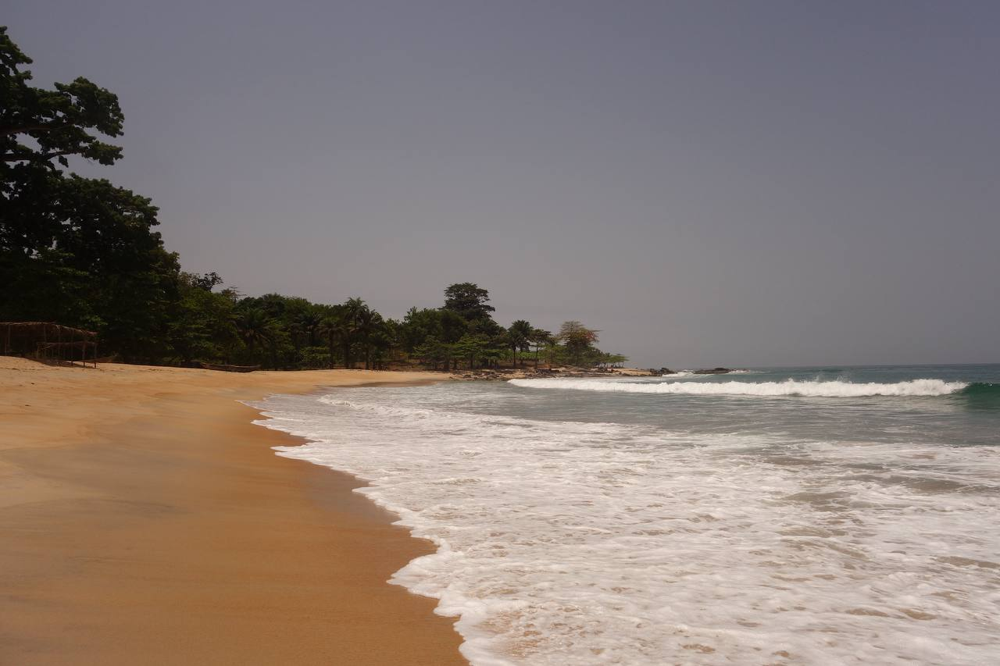
Robertsport. No hotels. No crowds. Just waves crashing into warm sand, from treeline to treeline.
Kent described it as being "10 years from being 10 years away from primetime" as we walked past a stretch of beachfront land just purchased by a Lebanese developer to develop their third eco lodge in Liberia. When he first arrived in 2003, he would grab a hammock at the local UN headquarters, or just camp because. He and Landis have been coming here for nearly two decades. What they saw was a place that was filled with opportunity if it had the right support on a long time horizon.
UOF has invested in the town through Annie's restaurant by the sea at the Robertsport Surf Club — a community hub that acts as a watering hole for ISA certified surf instructors, a local surf therapy program, the international surf competition, and travellers passing through — scholarships for surf program participants, and Philip's Guesthouse, a three-room property about 75 meters from the water funded through a UOF small business loan that Philip paid back even after COVID hit.2
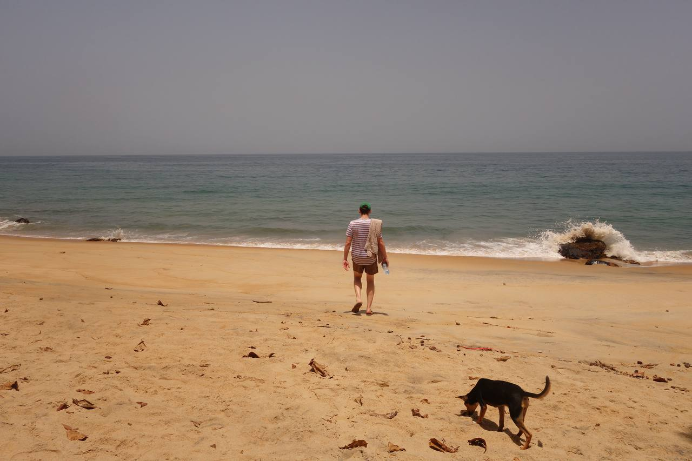
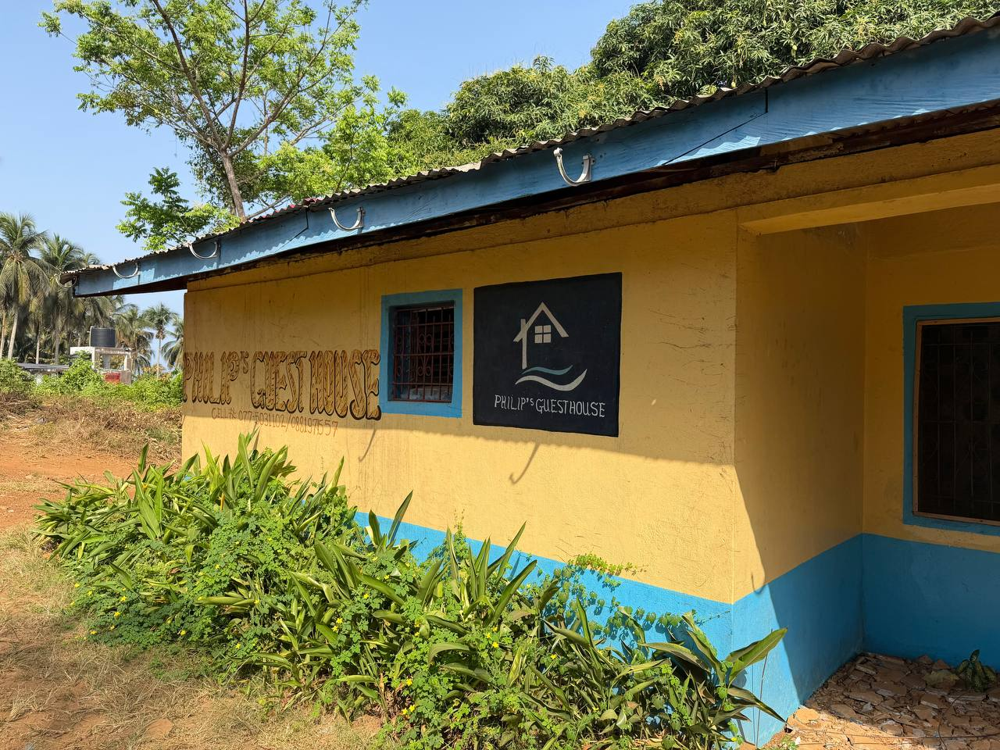
Left: The beach at Robertsport. A dog appeared within five minutes and joined the whole walk. Right: Philip's Guesthouse — yellow walls, blue trim, 75 meters from the water, kickstarted by a UOF loan.
The surfing community has grown from roughly 60 surfers in 2013 to over 200 by 2022, with locals having won competitions across the Ivory Coast and Senegal.3 The flywheel logic here is the same, stretched over a longer timeline. Kent and Landis invest in youth education and some surf tourism infrastructure. Tourism picks up. Others follow suit. The kids receive scholarships. Local businesses grow from the foot traffic. Repeat. Looking forward, two things need to happen for Robertsport to fully pay off: the road from Monrovia gets paved, cutting four hours of pothole whackamole to a two-hour smooth ride, and more tourism infrastructure gets built by operators beyond UOF. At that point the flywheel runs without them.
They are building something they know will outlast them, in a town they fell in love with before anyone else was paying attention.
Liberia Is Primed for Growth — After Years of Civil War and Ebola
On our first day, Kent and Landis sent Emma and me to Monrovia's national museum, which covers Liberia's history: its founding by African American expatriates around 1847, the civil wars of the early 1990s through the early 2000s, Ebola. The museum was visceral. The cars of Prince Charles Johnson and President Doe sat on the floor — big, beastly vehicles, the cars of men who cleared the streets in front of their motorcades or else. The Ebola section was roughly twice the size of the civil war section despite the death toll being ten times smaller. 250,000 dead in war. 15,000 dead by disease. I had never heard of the Liberian civil war before walking in — I was shocked to learn it was multiples more deadly than Ebola.
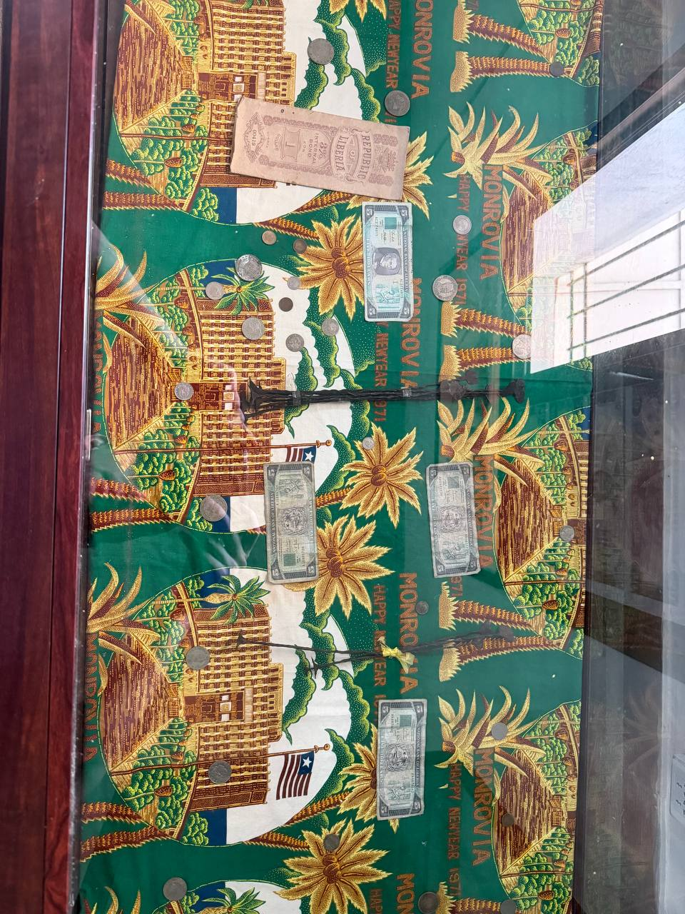
Currency from the Monrovia national museum — Liberian dollars over the years.
This piece would be incomplete without saying that Liberia is not all coconut oil and pristine surf. Kent and Landis carry a quiet, considered realism about the structural damage left behind by two generations shaped by civil war. You feel the residue in daily life. UOF feels it in their organization, in the stories and experiences that accumulate over 18 years in a hard country.
Kent and Landis trace most of this back to the war, which was rectified thanks to the strength of the women of Liberia — a sit-in in 2003 that ended the second civil war and put the country back on track.4 But the war caused two lasting problems: peace came without major accountability, which was followed by a decade of a slow post-war government that has been quicker to invest in itself than in its people.
Knowing all of this makes UOF's staffing model all the more fascinating. UOF has between 20-30 full-time employees at all times, every single one of them Liberian, with Kent and Landis the only exceptions. No ex-pats and, interestingly, Kent does not hire Liberians who have worked at other NGOs in the past — they are too used to corruption, to skimming off the top. He would rather train someone from scratch than inherit bad habits. This results in the people of the country being in charge of creating the infrastructure for mini-flywheels, which means the lessons learned by will stick with people who are going to be in Liberia long after Kent and Landis have moved on. Another example of UOF doing the hard thing for the better outcome.
Today, the numbers on Liberia are stark. GDP per capita sitting at roughly $681 per person per year.5 But Kent loves to remind you that the stat is vastly improved from the inglorious number-two spot 18 years ago when he arrived.
In 2026, optimism is visible on the ground. Everywhere you walk, there is construction going up — shacks turning into sheds, empty lots turning into mechanic shops, markets for fruit, new malls with electricity and wifi, shawarma shops where the food is ready and hot. The experience I had was clean stores, great service, humorous bartering, and, when you dig into the people behind a transaction or an experience, a deep yearning for a better life through hard work.
And then there is the internet. In Liberia, it is not coming through fiber optics. It is coming from the stars.
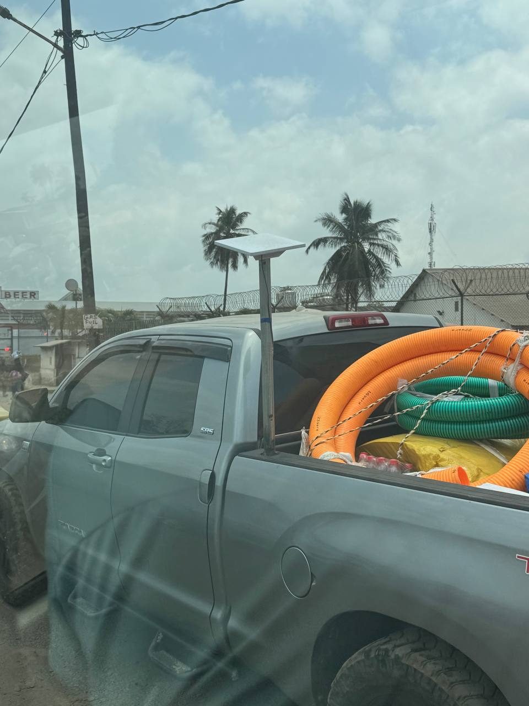
Spotted in Monrovia traffic: a Starlink terminal rigged to a makeshift pole in a truck bed. This was not an unusual sight.
I saw Starlink everywhere on the trip — from the café at Annie's in Robertsport, to a car passing by on a Monrovia street with a Starlink pad taped to a pole in the truck bed, to UOF operations, to spots all across the city. Emma and I used it our entire trip with zero issues, running on a travel monitor that fit in my carry-on bag. Starlink launched in Liberia in 2025 and as of early that year had approximately 336,000 subscribers across 19 African markets — growing fast enough that it sold out capacity in major Nigerian cities within months of launch.10 Internet penetration across the continent still sits below 40% of the population, but, based on what I saw, will accelerate in a short period of time thorugh satellites (not fiber optic).
Starlink's African Footprint
Subscribers across available markets, 2023–202510
(8 countries)
(16 countries)
(19 countries)
Liberia joined Starlink in 2025. Africa internet penetration below 40% — demand is largely unmet.
The money situation is similar to the internet situation, in that there is obvious room for vast improvement. Though, unlike with Starlink, there seems to be a vacuum for a digital leader in money. For instance, there are no exchanges offering swaps from Liberian dollars to USDT — which is crazy to me, because the ENTIRE economy runs on cash. I could not use a card anywhere I shopped, despite it seeming like a large portion of population having a cell phone. Many businesses still didn't give me a receipt. Remittances are priced in USD, with exchange rates written on chalkboards — actual chalkboards — at rates somewhere between 175:1 and 200:1 depending on your vendor. Smart contracts, a Liberian dollar stablecoin, and merchant infrastructure that can be enacted from a mobile device are ripe to take over, but still so far away.
Then, lastly, to end on a physical opportunity, there is coffee -- the latest program Kent has spun up, raising donations to build up Liberia's native Liberica bean (which is scoring 80/100 in early cupping tests) in Liberias first cofree roastery. A roastery that brings specialty coffee to a city currently dominated by Nescafe while simultaneously building an export channel is the goal. Kent calls it a purple cow type of opportunity -- and I think he is right, especially with Germany and Switzerland, close neighbors and major buyers of organic goods, as obvious export markets. Kent has a fundraising target of $30,000-48,000 CAD to make it happen. And that of course doesn't even come close to being the last of the opportunities, which Kent lists off as dried fruit, sunglasses built from recycled plastic, vegan cosmetics from coconut oil, Starlink cafes for mobile workers. Everywhere he looks in Liberia, je see ideas for business. Africa is rich in materials and goods and its exporting business is ripe to grow and UOF is ready to continue driving innovation through programs.
Bet on the Founders. Donate Your Time. Do Both.
The big thing I'm taking away is how investing deeply in small change can end up making big waves and will likely have a massive impact long-term, even beyond a lifetime. When I think of Kent and Landis and Africa, I think of a 50-year time horizon. I think of the Liberian team working out of the Monrovia compound. I think of the small town of Robertsport and the idea of Liberia's first coffee roastery and a fledgling coconut oil industry and a network of beehives and wells that service 20,000 people and scholarships that have taken close to 2,500 kids through school and a small loan program that has put capital into the hands of close to 200 entrepreneurs who have started businesses employing over 9,000 people. Each one is a small thing, a micro thing, that maybe doesn't have a massive, massive impact on its own. But in terms of getting dominoes rolling, of playing the long game with good people across many ideas, what UOF is doing is fascinating.
I think of it as Venture Donations: many small bets that have the potential to pay off long-term if the correct network effects hit and others join in on investing in a vertical — with that vertical likely being Africa. And I think this is going to happen. It is inevitable, even if slow. As an optimist, one just has to bet that Africa is going to accelerate at some point. As the powers that be start hitting birth rate and other demographic issues, Africa is set up as a land-rich, people-rich, culturally rich landmass. What Kent and Landis are doing is incredible in that they are laying the groundwork for what success looks like, perhaps putting Liberia far ahead of other spots through their programs and training, without the overhead of a typical NGO.
Kent and Landis are the founders here. They have been in market for 18 years. They have product-market fit across seven programs. They have a 99% loan repayment rate, a 96% high school graduation rate, and zero overhead. If that were a Series A pitch, it would be oversubscribed, haha. These are good people doing hard things for little pay, just because they love life and adventure and making the world a better place for more people. The best mental model I can find: they have somehow taken social impact principles, embedded them with capitalist operating models, and created an accelerator for private business and a venture fund for ideas to improve the economy and education platform of Liberia — through a nonprofit that has almost no overhead because it was founded by someone with a heart big enough to cover all admin fees.
I cannot think of a more exciting setup to donate to. And I cannot think of a more interesting place than Liberia right now.
Here is the other thing that only clicked for me after I had already done it. The idea of donating to a nonprofit as a young person has always felt burdensome. I am in my earning phase. A donation of money I don't have feels incredibly costly, even when it objectively isn't. But I have a ton of time I can spare, and the idea of giving away my time and skill is not that scary. Funny enough, this only clicked after I showed up in Africa and Kent explained it to me. I had envisioned the trip as a vacation that involved some work. He reframed it: I was donating time by showing up. That was the donation. I had been unknowingly doing the thing the whole time. Emma and I were literally able to create 60 unique post templates across five channels, a content calendar, and a working Claude setup in just under four days of six-hour working windows. Donating my time and skill ended up helping me just as much as I helped UOF.
I would challenge all my friends and my generation — I am of Z — to donate a few days or a week to a nonprofit this year. And more importantly, donate your time AND skills. We are an internet-native, AI-forward generation. The tools we have built our careers on can do extraordinary things for organizations like UOF in very little time.
Donate your time, not your money. And if you can do both, do both.
How to Get Involved
Three ways in, depending on who you are.
For my crypto friends
Help Rebuild Financial Rails
UOF's loan program runs on spreadsheets. Smart contracts could change that?? I'm also looking for someone to help UOF accept crypto donations with tax-loss harvesting on the donor side. And if you want to spend time in Monrovia setting up developer infrastructure and vibecoding workshops — that's an open invitation.
Send me a noteFor anyone who wants to give
Connect with Kent & Landis Directly
They take direct donations from US and Canadian donors — to the coffee roastery, scholarships, beekeeping equipment, or wherever it's needed most. If you want a personal introduction before giving, I'm happy to make it.
Send me a noteSources & Notes
- Charity Navigator rates top-performing charities at 85-92% program spend. OECD estimates administrative overhead at major multilateral organizations between 12-30%. Charity Navigator.
- Philip's Guesthouse background. universaloutreachfoundation.org: "Waves of Change".
- Robertsport surf community growth: 60 surfers (2013) to 200+ (2022). The NATIVE Magazine, 2022. CNN, 2022.
- Women of Liberia Mass Action for Peace, 2003. Led by Leymah Gbowee, Nobel Peace Prize recipient. Wikipedia.
- GDP per capita ~$681 (2024, constant 2015 prices). African Development Bank, 2024.
- Population ~5.82 million as of January 2026. UN Population Division, 2024 revision.
- Median age 19.8 years. World Population Review, 2026.
- 42.4% of population under 25. UN World Population Prospects 2024.
- GDP growth 4.0% in 2024; 5.2% forecast 2025. African Development Bank.
- Starlink Africa: 336,000 subscribers across 19 markets as of Q1 2025. Liberia launched 2025. TeleGeography, 2025. CleanTechnica, 2025.